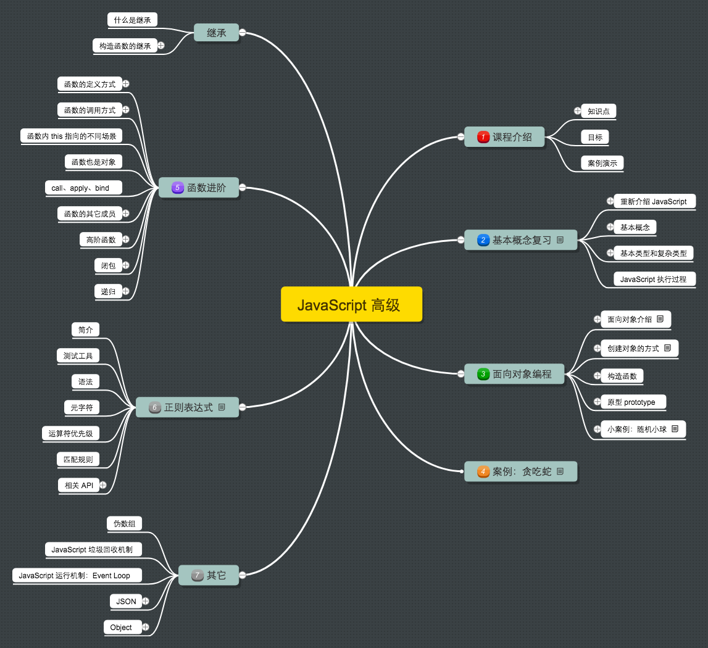

学习目标:
- 理解面向对象开发思想
- 掌握 JavaScript 面向对象开发相关模式
- 掌握在 JavaScript 中使用正则表达式
- typora-copy-images-to media
JavaScript 高级

课程介绍
课程大纲

目标
- 理解面向对象开发思想
- 掌握 JavaScript 面向对象开发相关模式
- 掌握在 JavaScript 中使用正则表达式
案例演示
基本概念复习
由于 JavaScript 高级还是针对 JavaScript 语言本身的一个进阶学习，所以在开始之前我们先对以前所学过的 JavaScript 相关知识点做一个快速复习总结。
重新介绍 JavaScript
JavaScript 是什么
- 解析执行：轻量级解释型的，或是 JIT 编译型的程序设计语言
- 语言特点：动态，头等函数 (First-class Function)
- 又称函数是 JavaScript 中的一等公民
- 执行环境：在宿主环境（host environment）下运行，浏览器是最常见的 JavaScript 宿主环境
- 但是在很多非浏览器环境中也使用 JavaScript ，例如 node.js
- 编程范式：基于原型、多范式的动态脚本语言，并且支持面向对象、命令式和声明式（如：函数式编程）编程风格
JavaScript 与浏览器的关系

JavaScript 的组成
| 组成部分 | 说明 |
|---|---|
| Ecmascript | 描述了该语言的语法和基本对象 |
| DOM | 描述了处理网页内容的方法和接口 |
| BOM | 描述了与浏览器进行交互的方法和接口 |
JavaScript 可以做什么
Any application that can be written in JavaScript, will eventually be written in JavaScript.
凡是能用 JavaScript 写出来的，最终都会用 JavaScript 写出来
JavaScript 发展历史
- JavaScript 的诞生
- JavaScript 与 Ecmascript 的关系
- JavaScript 与 Java 的关系
- JavaScript 的版本
- JavaScript 周边大事记
小结
基本概念
本小节快速过即可，主要是对学过的内容做知识点梳理。
- 语法
- 区分大小写
- 标识符
- 注释
- 严格模式
- 语句
- 关键字和保留字
- 变量
- 数据类型
- typeof 操作符
- Undefined
- Null
- Boolean
- Number
- String
- Object
- 操作符
- 流程控制语句
- 函数
JavaScript 中的数据类型
JavaScript 有 5 种简单数据类型：Undefined、Null、Boolean、Number、String 和 1 种复杂数据类型 Object 。
基本类型（值类型）
- Undefined
- Null
- Boolean
- Number
- String
复杂类型（引用类型）
- Object
- Array
- Date
- RegExp
- Function
- 基本包装类型
- Boolean
- Number
- String
- 单体内置对象
- Global
- Math
类型检测
typeofinstanceofObject.prototype.toString.call()
值类型和引用类型在内存中的存储方式（画图说明）
- 值类型按值存储
- 引用类型按引用存储
值类型复制和引用类型复制（画图说明）
- 值类型按值复制
- 引用类型按引用复制
值类型和引用类型参数传递（画图说明）
- 值类型按值传递
- 引用类型按引用传递
值类型与引用类型的差别
- 基本类型在内存中占据固定大小的空间，因此被保存在栈内存中
- 从一个变量向另一个变量复制基本类型的值，复制的是值的副本
- 引用类型的值是对象，保存在堆内存
- 包含引用类型值的变量实际上包含的并不是对象本身，而是一个指向该对象的指针
- 从一个变量向另一个变量复制引用类型的值的时候，复制是引用指针，因此两个变量最终都指向同一个对象
小结
- 类型检测方式
- 值类型和引用类型的存储方式
- 值类型复制和引用类型复制
- 方法参数中 值类型数据传递 和 引用类型数据传递
JavaScript 执行过程
JavaScript 运行分为两个阶段：
- 预解析
- 全局预解析（所有变量和函数声明都会提前；同名的函数和变量函数的优先级高）
- 函数内部预解析（所有的变量、函数和形参都会参与预解析）
- 函数
- 形参
- 普通变量
- 执行
先预解析全局作用域，然后执行全局作用域中的代码， 在执行全局代码的过程中遇到函数调用就会先进行函数预解析，然后再执行函数内代码。
JavaScript 面向对象编程

面向对象介绍
什么是对象
Everything is object （万物皆对象）

对象到底是什么，我们可以从两次层次来理解。
(1) 对象是单个事物的抽象。
一本书、一辆汽车、一个人都可以是对象，一个数据库、一张网页、一个与远程服务器的连接也可以是对象。当实物被抽象成对象，实物之间的关系就变成了对象之间的关系，从而就可以模拟现实情况，针对对象进行编程。
(2) 对象是一个容器，封装了属性（property）和方法（method）。
属性是对象的状态，方法是对象的行为（完成某种任务）。比如，我们可以把动物抽象为animal对象，使用“属性”记录具体是那一种动物，使用“方法”表示动物的某种行为（奔跑、捕猎、休息等等）。
在实际开发中，对象是一个抽象的概念，可以将其简单理解为：数据集或功能集。
ECMAScript-262 把对象定义为：无序属性的集合，其属性可以包含基本值、对象或者函数。 严格来讲，这就相当于说对象是一组没有特定顺序的值。对象的每个属性或方法都有一个名字，而每个名字都 映射到一个值。
提示：每个对象都是基于一个引用类型创建的，这些类型可以是系统内置的原生类型，也可以是开发人员自定义的类型。
什么是面向对象
面向对象不是新的东西，它只是过程式代码的一种高度封装，目的在于提高代码的开发效率和可维护性。
面向对象编程 —— Object Oriented Programming，简称 OOP ，是一种编程开发思想。 它将真实世界各种复杂的关系，抽象为一个个对象，然后由对象之间的分工与合作，完成对真实世界的模拟。
在面向对象程序开发思想中，每一个对象都是功能中心，具有明确分工，可以完成接受信息、处理数据、发出信息等任务。 因此，面向对象编程具有灵活、代码可复用、高度模块化等特点，容易维护和开发，比起由一系列函数或指令组成的传统的过程式编程（procedural programming），更适合多人合作的大型软件项目。
面向对象与面向过程：
- 面向过程就是亲力亲为，事无巨细，面面俱到，步步紧跟，有条不紊
- 面向对象就是找一个对象，指挥得结果
- 面向对象将执行者转变成指挥者
- 面向对象不是面向过程的替代，而是面向过程的封装
面向对象的特性：
- 封装性
- 继承性
- [多态性]
扩展阅读：
程序中面向对象的基本体现
在 JavaScript 中，所有数据类型都可以视为对象，当然也可以自定义对象。 自定义的对象数据类型就是面向对象中的类（ Class ）的概念。
我们以一个例子来说明面向过程和面向对象在程序流程上的不同之处。
假设我们要处理学生的成绩表，为了表示一个学生的成绩，面向过程的程序可以用一个对象表示：
var std1 = { name: 'Michael', score: 98 }
var std2 = { name: 'Bob', score: 81 }
而处理学生成绩可以通过函数实现，比如打印学生的成绩：
function printScore (student) {
console.log('姓名：' + student.name + ' ' + '成绩：' + student.score)
}
如果采用面向对象的程序设计思想，我们首选思考的不是程序的执行流程，
而是 Student 这种数据类型应该被视为一个对象，这个对象拥有 name 和 score 这两个属性（Property）。
如果要打印一个学生的成绩，首先必须创建出这个学生对应的对象，然后，给对象发一个 printScore 消息，让对象自己把自己的数据打印出来。
抽象数据行为模板（Class）：
function Student (name, score) {
this.name = name
this.score = score
}
Student.prototype.printScore = function () {
console.log('姓名：' + this.name + ' ' + '成绩：' + this.score)
}
根据模板创建具体实例对象（Instance）：
var std1 = new Student('Michael', 98)
var std2 = new Student('Bob', 81)
实例对象具有自己的具体行为（给对象发消息）：
std1.printScore() // => 姓名：Michael 成绩：98
std2.printScore() // => 姓名：Bob 成绩 81
面向对象的设计思想是从自然界中来的，因为在自然界中，类（Class）和实例（Instance）的概念是很自然的。 Class 是一种抽象概念，比如我们定义的 Class——Student ，是指学生这个概念， 而实例（Instance）则是一个个具体的 Student ，比如， Michael 和 Bob 是两个具体的 Student 。
所以，面向对象的设计思想是：
- 抽象出 Class
- 根据 Class 创建 Instance
- 指挥 Instance 得结果
面向对象的抽象程度又比函数要高，因为一个 Class 既包含数据，又包含操作数据的方法。
创建对象
简单方式
我们可以直接通过 new Object() 创建：
var person = new Object()
person.name = 'Jack'
person.age = 18
person.sayName = function () {
console.log(this.name)
}
每次创建通过 new Object() 比较麻烦，所以可以通过它的简写形式对象字面量来创建：
var person = {
name: 'Jack',
age: 18,
sayName: function () {
console.log(this.name)
}
}
对于上面的写法固然没有问题，但是假如我们要生成两个 person 实例对象呢？
var person1 = {
name: 'Jack',
age: 18,
sayName: function () {
console.log(this.name)
}
}
var person2 = {
name: 'Mike',
age: 16,
sayName: function () {
console.log(this.name)
}
}
通过上面的代码我们不难看出，这样写的代码太过冗余，重复性太高。
简单方式的改进：工厂函数
我们可以写一个函数，解决代码重复问题：
function createPerson (name, age) {
return {
name: name,
age: age,
sayName: function () {
console.log(this.name)
}
}
}
然后生成实例对象：
var p1 = createPerson('Jack', 18)
var p2 = createPerson('Mike', 18)
这样封装确实爽多了，通过工厂模式我们解决了创建多个相似对象代码冗余的问题， 但却没有解决对象识别的问题（即怎样知道一个对象的类型）。
构造函数
内容引导：
- 构造函数语法
- 分析构造函数
- 构造函数和实例对象的关系
- 实例的 constructor 属性
- instanceof 操作符
- 普通函数调用和构造函数调用的区别
- 构造函数的返回值
- 构造函数的静态成员和实例成员
- 函数也是对象
- 实例成员
- 静态成员
- 构造函数的问题
更优雅的工厂函数：构造函数
一种更优雅的工厂函数就是下面这样，构造函数：
function Person (name, age) {
this.name = name
this.age = age
this.sayName = function () {
console.log(this.name)
}
}
var p1 = new Person('Jack', 18)
p1.sayName() // => Jack
var p2 = new Person('Mike', 23)
p2.sayName() // => Mike
解析构造函数代码的执行
在上面的示例中，Person() 函数取代了 createPerson() 函数，但是实现效果是一样的。
这是为什么呢？
我们注意到，Person() 中的代码与 createPerson() 有以下几点不同之处：
- 没有显示的创建对象
- 直接将属性和方法赋给了
this对象 - 没有
return语句 - 函数名使用的是大写的
Person
而要创建 Person 实例，则必须使用 new 操作符。
以这种方式调用构造函数会经历以下 4 个步骤：
- 创建一个新对象
- 将构造函数的作用域赋给新对象（因此 this 就指向了这个新对象）
- 执行构造函数中的代码
- 返回新对象
下面是具体的伪代码：
function Person (name, age) {
// 当使用 new 操作符调用 Person() 的时候，实际上这里会先创建一个对象
// var instance = {}
// 然后让内部的 this 指向 instance 对象
// this = instance
// 接下来所有针对 this 的操作实际上操作的就是 instance
this.name = name
this.age = age
this.sayName = function () {
console.log(this.name)
}
// 在函数的结尾处会将 this 返回，也就是 instance
// return this
}
构造函数和实例对象的关系
使用构造函数的好处不仅仅在于代码的简洁性，更重要的是我们可以识别对象的具体类型了。
在每一个实例对象中同时有一个 constructor 属性，该属性指向创建该实例的构造函数：
console.log(p1.constructor === Person) // => true
console.log(p2.constructor === Person) // => true
console.log(p1.constructor === p2.constructor) // => true
对象的 constructor 属性最初是用来标识对象类型的，
但是，如果要检测对象的类型，还是使用 instanceof 操作符更可靠一些：
console.log(p1 instanceof Person) // => true
console.log(p2 instanceof Person) // => true
总结：
- 构造函数是根据具体的事物抽象出来的抽象模板
- 实例对象是根据抽象的构造函数模板得到的具体实例对象
- 每一个实例对象都具有一个
constructor属性，指向创建该实例的构造函数- 注意：
constructor是实例的属性的说法不严谨，具体后面的原型会讲到
- 注意：
- 可以通过实例的
constructor属性判断实例和构造函数之间的关系- 注意：这种方式不严谨，推荐使用
instanceof操作符，后面学原型会解释为什么
- 注意：这种方式不严谨，推荐使用
构造函数的问题
使用构造函数带来的最大的好处就是创建对象更方便了，但是其本身也存在一个浪费内存的问题：
function Person (name, age) {
this.name = name
this.age = age
this.type = 'human'
this.sayHello = function () {
console.log('hello ' + this.name)
}
}
var p1 = new Person('lpz', 18)
var p2 = new Person('Jack', 16)
在该示例中，从表面上好像没什么问题，但是实际上这样做，有一个很大的弊端。
那就是对于每一个实例对象，type 和 sayHello 都是一模一样的内容，
每一次生成一个实例，都必须为重复的内容，多占用一些内存，如果实例对象很多，会造成极大的内存浪费。
console.log(p1.sayHello === p2.sayHello) // => false
对于这种问题我们可以把需要共享的函数定义到构造函数外部：
function sayHello = function () {
console.log('hello ' + this.name)
}
function Person (name, age) {
this.name = name
this.age = age
this.type = 'human'
this.sayHello = sayHello
}
var p1 = new Person('lpz', 18)
var p2 = new Person('Jack', 16)
console.log(p1.sayHello === p2.sayHello) // => true
这样确实可以了，但是如果有多个需要共享的函数的话就会造成全局命名空间冲突的问题。
你肯定想到了可以把多个函数放到一个对象中用来避免全局命名空间冲突的问题：
var fns = {
sayHello: function () {
console.log('hello ' + this.name)
},
sayAge: function () {
console.log(this.age)
}
}
function Person (name, age) {
this.name = name
this.age = age
this.type = 'human'
this.sayHello = fns.sayHello
this.sayAge = fns.sayAge
}
var p1 = new Person('lpz', 18)
var p2 = new Person('Jack', 16)
console.log(p1.sayHello === p2.sayHello) // => true
console.log(p1.sayAge === p2.sayAge) // => true
至此，我们利用自己的方式基本上解决了构造函数的内存浪费问题。 但是代码看起来还是那么的格格不入，那有没有更好的方式呢？
小结
- 构造函数语法
- 分析构造函数
- 构造函数和实例对象的关系
- 实例的 constructor 属性
- instanceof 操作符
- 构造函数的问题
原型
内容引导：
- 使用 prototype 原型对象解决构造函数的问题
- 分析 构造函数、prototype 原型对象、实例对象 三者之间的关系
- 属性成员搜索原则：原型链
- 实例对象读写原型对象中的成员
- 原型对象的简写形式
- 原生对象的原型
- Object
- Array
- String
- ...
- 原型对象的问题
- 构造的函数和原型对象使用建议
更好的解决方案： prototype
Javascript 规定，每一个构造函数都有一个 prototype 属性，指向另一个对象。
这个对象的所有属性和方法，都会被构造函数的实例继承。
这也就意味着，我们可以把所有对象实例需要共享的属性和方法直接定义在 prototype 对象上。
function Person (name, age) {
this.name = name
this.age = age
}
console.log(Person.prototype)
Person.prototype.type = 'human'
Person.prototype.sayName = function () {
console.log(this.name)
}
var p1 = new Person(...)
var p2 = new Person(...)
console.log(p1.sayName === p2.sayName) // => true
这时所有实例的 type 属性和 sayName() 方法，
其实都是同一个内存地址，指向 prototype 对象，因此就提高了运行效率。
构造函数、实例、原型三者之间的关系

任何函数都具有一个 prototype 属性，该属性是一个对象。
function F () {}
console.log(F.prototype) // => object
F.prototype.sayHi = function () {
console.log('hi!')
}
构造函数的 prototype 对象默认都有一个 constructor 属性，指向 prototype 对象所在函数。
console.log(F.constructor === F) // => true
通过构造函数得到的实例对象内部会包含一个指向构造函数的 prototype 对象的指针 __proto__。
var instance = new F()
console.log(instance.__proto__ === F.prototype) // => true
__proto__ 是非标准属性。
实例对象可以直接访问原型对象成员。
instance.sayHi() // => hi!
总结：
- 任何函数都具有一个
prototype属性，该属性是一个对象 - 构造函数的
prototype对象默认都有一个constructor属性，指向prototype对象所在函数 - 通过构造函数得到的实例对象内部会包含一个指向构造函数的
prototype对象的指针__proto__ - 所有实例都直接或间接继承了原型对象的成员
属性成员的搜索原则：原型链
了解了 构造函数-实例-原型对象 三者之间的关系后，接下来我们来解释一下为什么实例对象可以访问原型对象中的成员。
每当代码读取某个对象的某个属性时，都会执行一次搜索，目标是具有给定名字的属性
- 搜索首先从对象实例本身开始
- 如果在实例中找到了具有给定名字的属性，则返回该属性的值
- 如果没有找到，则继续搜索指针指向的原型对象，在原型对象中查找具有给定名字的属性
- 如果在原型对象中找到了这个属性，则返回该属性的值
也就是说，在我们调用 person1.sayName() 的时候，会先后执行两次搜索：
- 首先，解析器会问：“实例 person1 有 sayName 属性吗？”答：“没有。
- ”然后，它继续搜索，再问：“ person1 的原型有 sayName 属性吗？”答：“有。
- ”于是，它就读取那个保存在原型对象中的函数。
- 当我们调用 person2.sayName() 时，将会重现相同的搜索过程，得到相同的结果。
而这正是多个对象实例共享原型所保存的属性和方法的基本原理。
总结：
- 先在自己身上找，找到即返回
- 自己身上找不到，则沿着原型链向上查找，找到即返回
- 如果一直到原型链的末端还没有找到，则返回
undefined
实例对象读写原型对象成员
读取：
- 先在自己身上找，找到即返回
- 自己身上找不到，则沿着原型链向上查找，找到即返回
- 如果一直到原型链的末端还没有找到，则返回
undefined
值类型成员写入（实例对象.值类型成员 = xx）：
- 当实例期望重写原型对象中的某个普通数据成员时实际上会把该成员添加到自己身上
- 也就是说该行为实际上会屏蔽掉对原型对象成员的访问
引用类型成员写入（实例对象.引用类型成员 = xx）：
- 同上
复杂类型修改（实例对象.成员.xx = xx）：
- 同样会先在自己身上找该成员，如果自己身上找到则直接修改
- 如果自己身上找不到，则沿着原型链继续查找，如果找到则修改
- 如果一直到原型链的末端还没有找到该成员，则报错（
实例对象.undefined.xx = xx）
更简单的原型语法
我们注意到，前面例子中每添加一个属性和方法就要敲一遍 Person.prototype 。
为减少不必要的输入，更常见的做法是用一个包含所有属性和方法的对象字面量来重写整个原型对象：
function Person (name, age) {
this.name = name
this.age = age
}
Person.prototype = {
type: 'human',
sayHello: function () {
console.log('我叫' + this.name + '，我今年' + this.age + '岁了')
}
}
在该示例中，我们将 Person.prototype 重置到了一个新的对象。
这样做的好处就是为 Person.prototype 添加成员简单了，但是也会带来一个问题，那就是原型对象丢失了 constructor 成员。
所以，我们为了保持 constructor 的指向正确，建议的写法是：
function Person (name, age) {
this.name = name
this.age = age
}
Person.prototype = {
constructor: Person, // => 手动将 constructor 指向正确的构造函数
type: 'human',
sayHello: function () {
console.log('我叫' + this.name + '，我今年' + this.age + '岁了')
}
}
原生对象的原型
所有函数都有 prototype 属性对象。
- Object.prototype
- Function.prototype
- Array.prototype
- String.prototype
- Number.prototype
- Date.prototype
- ...
练习：为数组对象和字符串对象扩展原型方法。
原型对象的问题
- 共享数组
- 共享对象
如果真的希望可以被实例对象之间共享和修改这些共享数据那就不是问题。但是如果不希望实例之间共享和修改这些共享数据则就是问题。
一个更好的建议是，最好不要让实例之间互相共享这些数组或者对象成员，一旦修改的话会导致数据的走向很不明确而且难以维护。
原型对象使用建议
- 私有成员（一般就是非函数成员）放到构造函数中
- 共享成员（一般就是函数）放到原型对象中
- 如果重置了
prototype记得修正constructor的指向
案例：随机方块
面向对象游戏案例：贪吃蛇
案例相关源码以上传到 GitHub ：https://github.com/lipengzhou/new-snake
案例介绍
游戏演示
在线演示地址：贪吃蛇
案例目标
游戏的目的是用来体会js高级语法的使用 不需要具备抽象对象的能力，使用面向对象的方式分析问题，需要一个漫长的过程。
功能实现
搭建页面
放一个容器盛放游戏场景 div#map，设置样式
#map {
width: 800px;
height: 600px;
background-color: #ccc;
position: relative;
}
分析对象
- 游戏对象
- 蛇对象
- 食物对象
创建食物对象
Food
属性
- x
- y
- width
- height
- color
方法
- render 随机创建一个食物对象，并输出到map上
创建Food的构造函数，并设置属性
var position = 'absolute';
var elements = [];
function Food(x, y, width, height, color) {
this.x = x || 0;
this.y = y || 0;
// 食物的宽度和高度(像素)
this.width = width || 20;
this.height = height || 20;
// 食物的颜色
this.color = color || 'green';
}
- 通过原型设置render方法，实现随机产生食物对象，并渲染到map上
Food.prototype.render = function (map) {
// 随机食物的位置，map.宽度/food.宽度，总共有多少分food的宽度，随机一下。然后再乘以food的宽度
this.x = parseInt(Math.random() * map.offsetWidth / this.width) * this.width;
this.y = parseInt(Math.random() * map.offsetHeight / this.height) * this.height;
// 动态创建食物对应的div
var div = document.createElement('div');
map.appendChild(div);
div.style.position = position;
div.style.left = this.x + 'px';
div.style.top = this.y + 'px';
div.style.width = this.width + 'px';
div.style.height = this.height + 'px';
div.style.backgroundColor = this.color;
elements.push(div);
}
- 通过自调用函数，进行封装，通过window暴露Food对象
window.Food = Food;
创建蛇对象
Snake
属性
- width 蛇节的宽度 默认20
- height 蛇节的高度 默认20
- body 数组，蛇的头部和身体，第一个位置是蛇头
- direction 蛇运动的方向 默认right 可以是 left top bottom
方法
- render 把蛇渲染到map上
Snake构造函数
var position = 'absolute';
var elements = [];
function Snake(width, height, direction) {
// 设置每一个蛇节的宽度
this.width = width || 20;
this.height = height || 20;
// 蛇的每一部分, 第一部分是蛇头
this.body = [
{x: 3, y: 2, color: 'red'},
{x: 2, y: 2, color: 'red'},
{x: 1, y: 2, color: 'red'}
];
this.direction = direction || 'right';
}
- render方法
Snake.prototype.render = function(map) {
for(var i = 0; i < this.body.length; i++) {
var obj = this.body[i];
var div = document.createElement('div');
map.appendChild(div);
div.style.left = obj.x * this.width + 'px';
div.style.top = obj.y * this.height + 'px';
div.style.position = position;
div.style.backgroundColor = obj.color;
div.style.width = this.width + 'px';
div.style.height = this.height + 'px';
}
}
- 在自调用函数中暴露Snake对象
window.Snake = Snake;
创建游戏对象
游戏对象，用来管理游戏中的所有对象和开始游戏
Game
属性
food
snake
map
方法
- start 开始游戏（绘制所有游戏对象）
- 构造函数
function Game(map) {
this.food = new Food();
this.snake = new Snake();
this.map = map;
}
- 开始游戏，渲染食物对象和蛇对象
Game.prototype.start = function () {
this.food.render(this.map);
this.snake.render(this.map);
}
游戏的逻辑
写蛇的move方法
在蛇对象(snake.js)中，在Snake的原型上新增move方法
让蛇移动起来，把蛇身体的每一部分往前移动一下
- 蛇头部分根据不同的方向决定 往哪里移动
Snake.prototype.move = function (food, map) {
// 让蛇身体的每一部分往前移动一下
var i = this.body.length - 1;
for(; i > 0; i--) {
this.body[i].x = this.body[i - 1].x;
this.body[i].y = this.body[i - 1].y;
}
// 根据移动的方向，决定蛇头如何处理
switch(this.direction) {
case 'left':
this.body[0].x -= 1;
break;
case 'right':
this.body[0].x += 1;
break;
case 'top':
this.body[0].y -= 1;
break;
case 'bottom':
this.body[0].y += 1;
break;
}
}
- 在game中测试
this.snake.move(this.food, this.map);
this.snake.render(this.map);
让蛇自己动起来
私有方法
什么是私有方法？ 不能被外部访问的方法 如何创建私有方法？ 使用自调用函数包裹在game.js中 添加runSnake的私有方法，开启定时器调用蛇的move和render方法，让蛇动起来
- 判断蛇是否撞墙
function runSnake() {
var timerId = setInterval(function() {
this.snake.move(this.food, this.map);
// 在渲染前，删除之前的蛇
this.snake.render(this.map);
// 判断蛇是否撞墙
var maxX = this.map.offsetWidth / this.snake.width;
var maxY = this.map.offsetHeight / this.snake.height;
var headX = this.snake.body[0].x;
var headY = this.snake.body[0].y;
if (headX < 0 || headX >= maxX) {
clearInterval(timerId);
alert('Game Over');
}
if (headY < 0 || headY >= maxY) {
clearInterval(timerId);
alert('Game Over');
}
}.bind(that), 150);
}
- 在snake中添加删除蛇的私有方法，在render中调用
function remove() {
// 删除渲染的蛇
var i = elements.length - 1;
for(; i >= 0; i--) {
// 删除页面上渲染的蛇
elements[i].parentNode.removeChild(elements[i]);
// 删除elements数组中的元素
elements.splice(i, 1);
}
}
- 在game中通过键盘控制蛇的移动方向
function bindKey() {
document.addEventListener('keydown', function(e) {
switch (e.keyCode) {
case 37:
// left
this.snake.direction = 'left';
break;
case 38:
// top
this.snake.direction = 'top';
break;
case 39:
// right
this.snake.direction = 'right';
break;
case 40:
// bottom
this.snake.direction = 'bottom';
break;
}
}.bind(that), false);
}
- 在start方法中调用
bindKey();
判断蛇是否吃到食物
// 在Snake的move方法中
// 在移动的过程中判断蛇是否吃到食物
// 如果蛇头和食物的位置重合代表吃到食物
// 食物的坐标是像素，蛇的坐标是几个宽度，进行转换
var headX = this.body[0].x * this.width;
var headY = this.body[0].y * this.height;
if (headX === food.x && headY === food.y) {
// 吃到食物，往蛇节的最后加一节
var last = this.body[this.body.length - 1];
this.body.push({
x: last.x,
y: last.y,
color: last.color
})
// 把现在的食物对象删除，并重新随机渲染一个食物对象
food.render(map);
}
其它处理
把html中的js代码放到index.js中
避免html中出现js代码
自调用函数的参数
(function (window, undefined) {
var document = window.document;
}(window, undefined))
- 传入window对象
将来代码压缩的时候，可以吧 function (window) 压缩成 function (w)
- 传入undefined
在将来会看到别人写的代码中会把undefined作为函数的参数(当前案例没有使用) 因为在有的老版本的浏览器中 undefined可以被重新赋值，防止undefined 被重新赋值
整理代码
现在的代码结构清晰，谁出问题就找到对应的js文件即可。 通过自调用函数，已经防止了变量命名污染的问题
但是，由于js文件数较多，需要在页面上引用，会产生文件依赖的问题(先引入那个js，再引入哪个js) 将来通过工具把js文件合并并压缩。现在手工合并js文件演示
- 问题1
// 如果存在多个自调用函数要用分号分割，否则语法错误
// 下面代码会报错
(function () {
}())
(function () {
}())
// 所以代码规范中会建议在自调用函数之前加上分号
// 下面代码没有问题
;(function () {
}())
;(function () {
}())
- 问题2
// 当自调用函数 前面有函数声明时，会把自调用函数作为参数
// 所以建议自调用函数前，加上;
var a = function () {
alert('11');
}
(function () {
alert('22');
}())
继承
什么是继承
- 现实生活中的继承
- 程序中的继承
构造函数的属性继承：借用构造函数
function Person (name, age) {
this.type = 'human'
this.name = name
this.age = age
}
function Student (name, age) {
// 借用构造函数继承属性成员
Person.call(this, name, age)
}
var s1 = Student('张三', 18)
console.log(s1.type, s1.name, s1.age) // => human 张三 18
构造函数的原型方法继承：拷贝继承（for-in）
function Person (name, age) {
this.type = 'human'
this.name = name
this.age = age
}
Person.prototype.sayName = function () {
console.log('hello ' + this.name)
}
function Student (name, age) {
Person.call(this, name, age)
}
// 原型对象拷贝继承原型对象成员
for(var key in Person.prototype) {
Student.prototype[key] = Person.prototype[key]
}
var s1 = Student('张三', 18)
s1.sayName() // => hello 张三
另一种继承方式：原型继承
function Person (name, age) {
this.type = 'human'
this.name = name
this.age = age
}
Person.prototype.sayName = function () {
console.log('hello ' + this.name)
}
function Student (name, age) {
Person.call(this, name, age)
}
// 利用原型的特性实现继承
Student.prototype = new Person()
var s1 = Student('张三', 18)
console.log(s1.type) // => human
s1.sayName() // => hello 张三
函数进阶
函数的定义方式
- 函数声明
- 函数表达式
new Function
函数声明
function foo () {
}
函数表达式
var foo = function () {
}
函数声明与函数表达式的区别
- 函数声明必须有名字
- 函数声明会函数提升，在预解析阶段就已创建，声明前后都可以调用
- 函数表达式类似于变量赋值
- 函数表达式可以没有名字，例如匿名函数
- 函数表达式没有变量提升，在执行阶段创建，必须在表达式执行之后才可以调用
下面是一个根据条件定义函数的例子：
if (true) {
function f () {
console.log(1)
}
} else {
function f () {
console.log(2)
}
}
以上代码执行结果在不同浏览器中结果不一致。
不过我们可以使用函数表达式解决上面的问题：
var f
if (true) {
f = function () {
console.log(1)
}
} else {
f = function () {
console.log(2)
}
}
函数的调用方式
- 普通函数
- 构造函数
- 对象方法
函数内 this 指向的不同场景
函数的调用方式决定了 this 指向的不同：
| 调用方式 | 非严格模式 | 备注 |
|---|---|---|
| 普通函数调用 | window | 严格模式下是 undefined |
| 构造函数调用 | 实例对象 | 原型方法中 this 也是实例对象 |
| 对象方法调用 | 该方法所属对象 | 紧挨着的对象 |
| 事件绑定方法 | 绑定事件对象 | |
| 定时器函数 | window |
这就是对函数内部 this 指向的基本整理，写代码写多了自然而然就熟悉了。
函数也是对象
- 所有函数都是
Function的实例
call、apply、bind
那了解了函数 this 指向的不同场景之后，我们知道有些情况下我们为了使用某种特定环境的 this 引用， 这时候时候我们就需要采用一些特殊手段来处理了，例如我们经常在定时器外部备份 this 引用，然后在定时器函数内部使用外部 this 的引用。 然而实际上对于这种做法我们的 JavaScript 为我们专门提供了一些函数方法用来帮我们更优雅的处理函数内部 this 指向问题。 这就是接下来我们要学习的 call、apply、bind 三个函数方法。
call
call() 方法调用一个函数, 其具有一个指定的 this 值和分别地提供的参数(参数的列表)。
注意：该方法的作用和 apply() 方法类似，只有一个区别，就是 call() 方法接受的是若干个参数的列表，而 apply() 方法接受的是一个包含多个参数的数组。
语法：
fun.call(thisArg[, arg1[, arg2[, ...]]])
参数：
thisArg- 在 fun 函数运行时指定的 this 值
- 如果指定了 null 或者 undefined 则内部 this 指向 window
arg1, arg2, ...- 指定的参数列表
apply
apply() 方法调用一个函数, 其具有一个指定的 this 值，以及作为一个数组（或类似数组的对象）提供的参数。
注意：该方法的作用和 call() 方法类似，只有一个区别，就是 call() 方法接受的是若干个参数的列表，而 apply() 方法接受的是一个包含多个参数的数组。
语法：
fun.apply(thisArg, [argsArray])
参数：
thisArgargsArray
apply() 与 call() 非常相似，不同之处在于提供参数的方式。
apply() 使用参数数组而不是一组参数列表。例如：
fun.apply(this, ['eat', 'bananas'])
bind
bind() 函数会创建一个新函数（称为绑定函数），新函数与被调函数（绑定函数的目标函数）具有相同的函数体（在 ECMAScript 5 规范中内置的call属性）。 当目标函数被调用时 this 值绑定到 bind() 的第一个参数，该参数不能被重写。绑定函数被调用时，bind() 也接受预设的参数提供给原函数。 一个绑定函数也能使用new操作符创建对象：这种行为就像把原函数当成构造器。提供的 this 值被忽略，同时调用时的参数被提供给模拟函数。
语法：
fun.bind(thisArg[, arg1[, arg2[, ...]]])
参数：
thisArg
- 当绑定函数被调用时，该参数会作为原函数运行时的 this 指向。当使用new 操作符调用绑定函数时，该参数无效。
arg1, arg2, ...
- 当绑定函数被调用时，这些参数将置于实参之前传递给被绑定的方法。
返回值：
返回由指定的this值和初始化参数改造的原函数拷贝。
示例1：
this.x = 9;
var module = {
x: 81,
getX: function() { return this.x; }
};
module.getX(); // 返回 81
var retrieveX = module.getX;
retrieveX(); // 返回 9, 在这种情况下，"this"指向全局作用域
// 创建一个新函数，将"this"绑定到module对象
// 新手可能会被全局的x变量和module里的属性x所迷惑
var boundGetX = retrieveX.bind(module);
boundGetX(); // 返回 81
示例2：
function LateBloomer() {
this.petalCount = Math.ceil(Math.random() * 12) + 1;
}
// Declare bloom after a delay of 1 second
LateBloomer.prototype.bloom = function() {
window.setTimeout(this.declare.bind(this), 1000);
};
LateBloomer.prototype.declare = function() {
console.log('I am a beautiful flower with ' +
this.petalCount + ' petals!');
};
var flower = new LateBloomer();
flower.bloom(); // 一秒钟后, 调用'declare'方法
小结
call 和 apply 特性一样
- 都是用来调用函数，而且是立即调用
- 但是可以在调用函数的同时，通过第一个参数指定函数内部
this的指向 - call 调用的时候，参数必须以参数列表的形式进行传递，也就是以逗号分隔的方式依次传递即可
- apply 调用的时候，参数必须是一个数组，然后在执行的时候，会将数组内部的元素一个一个拿出来，与形参一一对应进行传递
- 如果第一个参数指定了
null或者undefined则内部 this 指向 window
bind
- 可以用来指定内部 this 的指向，然后生成一个改变了 this 指向的新的函数
- 它和 call、apply 最大的区别是：bind 不会调用
- bind 支持传递参数，它的传参方式比较特殊，一共有两个位置可以传递
- 在 bind 的同时，以参数列表的形式进行传递
- 在调用的时候，以参数列表的形式进行传递
- 那到底以谁 bind 的时候传递的参数为准呢还是以调用的时候传递的参数为准
- 两者合并：bind 的时候传递的参数和调用的时候传递的参数会合并到一起，传递到函数内部
函数的其它成员
- arguments
- 实参集合
- caller
- 函数的调用者
- length
- 形参的个数
- name
- 函数的名称
function fn(x, y, z) {
console.log(fn.length) // => 形参的个数
console.log(arguments) // 伪数组实参参数集合
console.log(arguments.callee === fn) // 函数本身
console.log(fn.caller) // 函数的调用者
console.log(fn.name) // => 函数的名字
}
function f() {
fn(10, 20, 30)
}
f()
高阶函数
- 函数可以作为参数
- 函数可以作为返回值
作为参数
function eat (callback) {
setTimeout(function () {
console.log('吃完了')
callback()
}, 1000)
}
eat(function () {
console.log('去唱歌')
})
作为返回值
function genFun (type) {
return function (obj) {
return Object.prototype.toString.call(obj) === type
}
}
var isArray = genFun('[object Array]')
var isObject = genFun('[object Object]')
console.log(isArray([])) // => true
console.log(isArray({})) // => true
函数闭包
function fn () {
var count = 0
return {
getCount: function () {
console.log(count)
},
setCount: function () {
count++
}
}
}
var fns = fn()
fns.getCount() // => 0
fns.setCount()
fns.getCount() // => 1
作用域、作用域链、预解析
- 全局作用域
- 函数作用域
- 没有块级作用域
{
var foo = 'bar'
}
console.log(foo)
if (true) {
var a = 123
}
console.log(a)
作用域链示例代码：
var a = 10
function fn () {
var b = 20
function fn1 () {
var c = 30
console.log(a + b + c)
}
function fn2 () {
var d = 40
console.log(c + d)
}
fn1()
fn2()
}
- 内层作用域可以访问外层作用域，反之不行
什么是闭包
闭包就是能够读取其他函数内部变量的函数， 由于在 Javascript 语言中，只有函数内部的子函数才能读取局部变量， 因此可以把闭包简单理解成 “定义在一个函数内部的函数”。 所以，在本质上，闭包就是将函数内部和函数外部连接起来的一座桥梁。
闭包的用途：
- 可以在函数外部读取函数内部成员
- 让函数内成员始终存活在内存中
一些关于闭包的例子
示例1：
var arr = [10, 20, 30]
for(var i = 0; i < arr.length; i++) {
arr[i] = function () {
console.log(i)
}
}
示例2：
console.log(111)
for(var i = 0; i < 3; i++) {
setTimeout(function () {
console.log(i)
}, 0)
}
console.log(222)
示例3：投票
示例4：判断类型
示例5：沙箱模式
闭包的思考题
思考题 1：
var name = "The Window";
var object = {
name: "My Object",
getNameFunc: function () {
return function () {
return this.name;
};
}
};
console.log(object.getNameFunc()())
思考题 2：
var name = "The Window";
var object = {
name: "My Object",
getNameFunc: function () {
var that = this;
return function () {
return that.name;
};
}
};
console.log(object.getNameFunc()())
小结
函数递归
递归执行模型
function fn1 () {
console.log(111)
fn2()
console.log('fn1')
}
function fn2 () {
console.log(222)
fn3()
console.log('fn2')
}
function fn3 () {
console.log(333)
fn4()
console.log('fn3')
}
function fn4 () {
console.log(444)
console.log('fn4')
}
fn1()
举个栗子：计算阶乘的递归函数
function factorial (num) {
if (num <= 1) {
return 1
} else {
return num * factorial(num - 1)
}
}
递归应用场景
- 深拷贝
- 菜单树
- 遍历 DOM 树
正则表达式
- 了解正则表达式基本语法
- 能够使用JavaScript的正则对象
正则表达式简介
什么是正则表达式
正则表达式：用于匹配规律规则的表达式，正则表达式最初是科学家对人类神经系统的工作原理的早期研究，现在在编程语言中有广泛的应用。正则表通常被用来检索、替换那些符合某个模式(规则)的文本。 正则表达式是对字符串操作的一种逻辑公式，就是用事先定义好的一些特定字符、及这些特定字符的组合，组成一个“规则字符串”，这个“规则字符串”用来表达对字符串的一种过滤逻辑。
正则表达式的作用
- 给定的字符串是否符合正则表达式的过滤逻辑(匹配)
- 可以通过正则表达式，从字符串中获取我们想要的特定部分(提取)
- 强大的字符串替换能力(替换)
正则表达式的特点
- 灵活性、逻辑性和功能性非常的强
- 可以迅速地用极简单的方式达到字符串的复杂控制
- 对于刚接触的人来说，比较晦涩难懂
正则表达式的测试
- 在线测试正则
- 工具中使用正则表达式
- sublime/vscode/word
- 演示替换所有的数字
正则表达式的组成
- 普通字符
- 特殊字符(元字符)：正则表达式中有特殊意义的字符
示例演示：
\d匹配数字ab\d匹配 ab1、ab2
元字符串
通过测试工具演示下面元字符的使用
常用元字符串
| 元字符 | 说明 |
|---|---|
| \d | 匹配数字 |
| \D | 匹配任意非数字的字符 |
| \w | 匹配字母或数字或下划线 |
| \W | 匹配任意不是字母，数字，下划线 |
| \s | 匹配任意的空白符 |
| \S | 匹配任意不是空白符的字符 |
| . | 匹配除换行符以外的任意单个字符 |
| ^ | 表示匹配行首的文本(以谁开始) |
| $ | 表示匹配行尾的文本(以谁结束) |
限定符
| 限定符 | 说明 |
|---|---|
| * | 重复零次或更多次 |
| + | 重复一次或更多次 |
| ? | 重复零次或一次 |
| {n} | 重复n次 |
| {n,} | 重复n次或更多次 |
| {n,m} | 重复n到m次 |
其它
[] 字符串用中括号括起来，表示匹配其中的任一字符，相当于或的意思
[^] 匹配除中括号以内的内容
\ 转义符
| 或者，选择两者中的一个。注意|将左右两边分为两部分，而不管左右两边有多长多乱
() 从两个直接量中选择一个，分组
eg：gr(a|e)y匹配gray和grey
[\u4e00-\u9fa5] 匹配汉字
案例
验证手机号：
^\d{11}$
验证邮编：
^\d{6}$
验证日期 2012-5-01
^\d{4}-\d{1,2}-\d{1,2}$
验证邮箱 xxx@itcast.cn：
^\w+@\w+\.\w+$
验证IP地址 192.168.1.10
^\d{1,3}\(.\d{1,3}){3}$
JavaScript 中使用正则表达式
创建正则对象
方式1：
var reg = new Regex('\d', 'i');
var reg = new Regex('\d', 'gi');
方式2：
var reg = /\d/i;
var reg = /\d/gi;
参数
| 标志 | 说明 |
|---|---|
| i | 忽略大小写 |
| g | 全局匹配 |
| gi | 全局匹配+忽略大小写 |
正则匹配
// 匹配日期
var dateStr = '2015-10-10';
var reg = /^\d{4}-\d{1,2}-\d{1,2}$/
console.log(reg.test(dateStr));
正则提取
// 1. 提取工资
var str = "张三：1000，李四：5000，王五：8000。";
var array = str.match(/\d+/g);
console.log(array);
// 2. 提取email地址
var str = "123123@xx.com,fangfang@valuedopinions.cn 286669312@qq.com 2、emailenglish@emailenglish.englishtown.com 286669312@qq.com...";
var array = str.match(/\w+@\w+\.\w+(\.\w+)?/g);
console.log(array);
// 3. 分组提取
// 3. 提取日期中的年部分 2015-5-10
var dateStr = '2016-1-5';
// 正则表达式中的()作为分组来使用，获取分组匹配到的结果用Regex.$1 $2 $3....来获取
var reg = /(\d{4})-\d{1,2}-\d{1,2}/;
if (reg.test(dateStr)) {
console.log(RegExp.$1);
}
// 4. 提取邮件中的每一部分
var reg = /(\w+)@(\w+)\.(\w+)(\.\w+)?/;
var str = "123123@xx.com";
if (reg.test(str)) {
console.log(RegExp.$1);
console.log(RegExp.$2);
console.log(RegExp.$3);
}
正则替换
// 1. 替换所有空白
var str = " 123AD asadf asadfasf adf ";
str = str.replace(/\s/g,"xx");
console.log(str);
// 2. 替换所有,|，
var str = "abc,efg,123，abc,123，a";
str = str.replace(/,|，/g, ".");
console.log(str);
案例：表单验证
QQ号：<input type="text" id="txtQQ"><span></span><br>
邮箱：<input type="text" id="txtEMail"><span></span><br>
手机：<input type="text" id="txtPhone"><span></span><br>
生日：<input type="text" id="txtBirthday"><span></span><br>
姓名：<input type="text" id="txtName"><span></span><br>
//获取文本框
var txtQQ = document.getElementById("txtQQ");
var txtEMail = document.getElementById("txtEMail");
var txtPhone = document.getElementById("txtPhone");
var txtBirthday = document.getElementById("txtBirthday");
var txtName = document.getElementById("txtName");
//
txtQQ.onblur = function () {
//获取当前文本框对应的span
var span = this.nextElementSibling;
var reg = /^\d{5,12}$/;
//判断验证是否成功
if(!reg.test(this.value) ){
//验证不成功
span.innerText = "请输入正确的QQ号";
span.style.color = "red";
}else{
//验证成功
span.innerText = "";
span.style.color = "";
}
};
//txtEMail
txtEMail.onblur = function () {
//获取当前文本框对应的span
var span = this.nextElementSibling;
var reg = /^\w+@\w+\.\w+(\.\w+)?$/;
//判断验证是否成功
if(!reg.test(this.value) ){
//验证不成功
span.innerText = "请输入正确的EMail地址";
span.style.color = "red";
}else{
//验证成功
span.innerText = "";
span.style.color = "";
}
};
表单验证部分，封装成函数：
var regBirthday = /^\d{4}-\d{1,2}-\d{1,2}$/;
addCheck(txtBirthday, regBirthday, "请输入正确的出生日期");
//给文本框添加验证
function addCheck(element, reg, tip) {
element.onblur = function () {
//获取当前文本框对应的span
var span = this.nextElementSibling;
//判断验证是否成功
if(!reg.test(this.value) ){
//验证不成功
span.innerText = tip;
span.style.color = "red";
}else{
//验证成功
span.innerText = "";
span.style.color = "";
}
};
}
通过给元素增加自定义验证属性对表单进行验证：
<form id="frm">
QQ号：<input type="text" name="txtQQ" data-rule="qq"><span></span><br>
邮箱：<input type="text" name="txtEMail" data-rule="email"><span></span><br>
手机：<input type="text" name="txtPhone" data-rule="phone"><span></span><br>
生日：<input type="text" name="txtBirthday" data-rule="date"><span></span><br>
姓名：<input type="text" name="txtName" data-rule="cn"><span></span><br>
</form>
// 所有的验证规则
var rules = [
{
name: 'qq',
reg: /^\d{5,12}$/,
tip: "请输入正确的QQ"
},
{
name: 'email',
reg: /^\w+@\w+\.\w+(\.\w+)?$/,
tip: "请输入正确的邮箱地址"
},
{
name: 'phone',
reg: /^\d{11}$/,
tip: "请输入正确的手机号码"
},
{
name: 'date',
reg: /^\d{4}-\d{1,2}-\d{1,2}$/,
tip: "请输入正确的出生日期"
},
{
name: 'cn',
reg: /^[\u4e00-\u9fa5]{2,4}$/,
tip: "请输入正确的姓名"
}];
addCheck('frm');
//给文本框添加验证
function addCheck(formId) {
var i = 0,
len = 0,
frm =document.getElementById(formId);
len = frm.children.length;
for (; i < len; i++) {
var element = frm.children[i];
// 表单元素中有name属性的元素添加验证
if (element.name) {
element.onblur = function () {
// 使用dataset获取data-自定义属性的值
var ruleName = this.dataset.rule;
var rule =getRuleByRuleName(rules, ruleName);
var span = this.nextElementSibling;
//判断验证是否成功
if(!rule.reg.test(this.value) ){
//验证不成功
span.innerText = rule.tip;
span.style.color = "red";
}else{
//验证成功
span.innerText = "";
span.style.color = "";
}
}
}
}
}
// 根据规则的名称获取规则对象
function getRuleByRuleName(rules, ruleName) {
var i = 0,
len = rules.length;
var rule = null;
for (; i < len; i++) {
if (rules[i].name == ruleName) {
rule = rules[i];
break;
}
}
return rule;
}